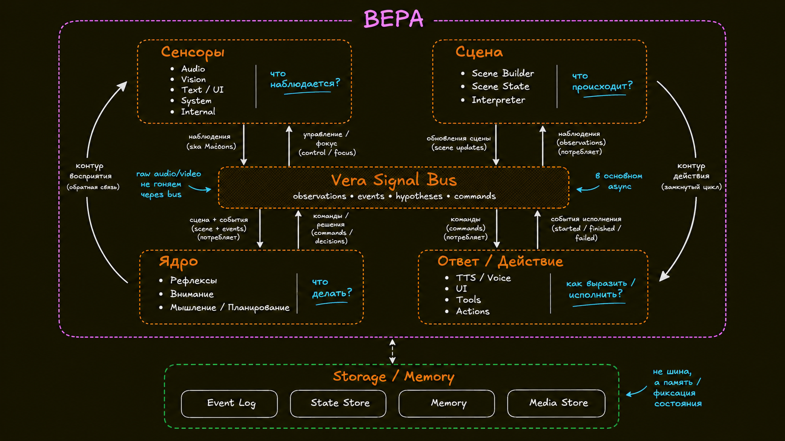

Вера
Вера — личный АИ помощник Алексея, который запускается локально на макбуке, использует локальные инструменты и LLM от провайдера.
Архитектура
Внутри системы выделены сенсоры, сцена, ядро, ответ и действие, а также общая событийная шина. Storage / Memory хранит журнал, состояние, память и медиа отдельно от шины.

~/Library/Application Support/VeraSensorPrototype/Users/: people.sqlite — источник истины для профилей и CAMP++ 192D embeddings; метаданные образцов также хранятся в базе, WAV — в voice-samples/. Целевой WAV Алексея для Nomo-PVAD и VoxLock находится в voice-samples/alex/enrollment/target-voice-5.wav. Связь образца с профилем сохраняется на уровне профиля; связь конкретного WAV с отдельным индексом embedding не предполагается. Каталог и подкаталоги закрыты правами 0700, база и аудиофайлы — 0600. speaker-references.json читается как legacy-источник и идемпотентно импортируется в базу; рабочие сравнения загружают профили из SQLite. Вера не поставляется со встроенными навыками: ~/Library/Application Support/VeraSensorPrototype/Skills/ создан как пустая основа, навыки появляются только при добавлении пользователем.Сенсоры
Получают сигналы из аудио, видео, текста/UI, системных источников и внутренних процессов Веры. Публикуют наблюдения и предварительные гипотезы; не решают за ядро, что важно и как действовать.
Сцена
Scene Builder связывает наблюдения. Scene State хранит текущую картину происходящего. Interpreter предлагает вероятные трактовки. Неопределённость и источник данных остаются видимыми.
Ядро
Рефлексы обрабатывают срочные ограниченные реакции; внимание выбирает фокус; мышление и планирование интерпретируют ситуацию, цели и варианты действий.
Ответ / Действие
Голос, UI, текстовые каналы и инструменты исполняют команды и сообщают фактический результат: начато, завершено, отменено или завершилось ошибкой.
Event Bus
Передаёт observations, events, hypotheses и commands между независимыми частями. Шина не владеет сценой, памятью или смыслом решения.
03 · Журнал архитектурных решений
Vera Signal Protocol 0.1. Kind — общий признак формы взаимодействия в протоколе шины. Все четыре решения зафиксированы как принятые. Ссылки в колонке «Положение» ведут к их описаниям.
| № | Решение | Статус | Положение |
|---|---|---|---|
| 1 | Четыре основных модуля. Sensors получает сигналы, Scene формирует картину происходящего, Core принимает решения, Response исполняет действия. | Принято | Подробнее ↗ |
| 2 | Четыре вида сообщений. Event сообщает о произошедшем, Command запрашивает действие, Query запрашивает информацию, Reply возвращает ответ. | Принято | Подробнее ↗ |
| 3 | Две оси классификации. Kind определяет способ взаимодействия, Domain — модуль-владелец сообщения. | Принято | Подробнее ↗ |
| 4 | Полномочия модулей. Межмодульные команды отправляет Core; все модули могут обмениваться событиями и запросами в пределах прав. | Принято | Подробнее ↗ |
ADR-001 · Четыре основных модуля
| Модуль | Цвет | Ответственность |
|---|---|---|
sensors | Голубой · #38BDF8 | Внешние сигналы, внутренняя телеметрия, наблюдения |
scene | Фиолетовый · #A78BFA | Интерпретация сигналов, актуальная модель происходящего |
core | Жёлтый · #FACC15 | Рефлексы, внимание, мышление, принятие решений |
response | Зелёный · #4ADE80 | Голос, UI, инструменты, исполнение действий и обратная связь |
Каждый модуль и Signal Bus запускаются отдельным процессом. Главная точка входа Веры запускает и контролирует процессы в составе одного приложения. Модули взаимодействуют через Bus; сбой или перезапуск одного модуля не должен требовать перезапуска остальных.
ADR-002 · Четыре вида сообщений (Kind)
Kind — общий протокольный дискриминатор для маршрутизации и наблюдения за обменом. Он не означает, что все сообщения имеют одинаковую семантику или должны обрабатываться одним способом. В модели Веры используются четыре формы:
| Kind | Назначение | Механизм |
|---|---|---|
event | Сообщение о произошедшем или обнаруженном | Pub/Sub |
command | Запрос на выполнение действия | Адресованная доставка |
query | Запрос информации | Request |
reply | Ответ на конкретный Query | Возврат инициатору запроса |
Reply используется для ответа на Query. Он не подтверждает приём или выполнение Command. Команда не гарантирует выполнение; исполнитель сообщает о фактическом результате отдельным Event в своём Domain. Так сохраняется разделение: Query/Reply читают данные, Command просит выполнить действие, Event сообщает о факте.
ADR-003 · Две оси классификации сообщений
- Kind — характер взаимодействия:
event,command,query,reply. - Domain — модуль-владелец сообщения:
sensors,scene,core,response.
| Поле | Назначение |
|---|---|
domain | Модуль-владелец сообщения; определяет область ответственности и может участвовать в проверке права публикации |
source | Конкретный отправитель |
target | Адресат, если требуется |
type | Конкретный тип сообщения |
payload | Данные сообщения |
При визуализации цвет сигнала берётся из его Domain. Цвет обозначает модуль-владелец, а не Kind; цвет не влияет на маршрутизацию. Kind — форма сообщения общего конверта, Domain — ответственность за его содержание.
ADR-004 · Полномочия модулей
| Модуль | Event | Command | Query | Reply |
|---|---|---|---|---|
| Sensors | Да | Нет | Да | Да |
| Scene | Да | Нет | Да | Да |
| Core | Да | Да | Да | Да |
| Response | Да | Нет | Да | Да |
Межмодульные команды инициирует только Core. Все модули могут публиковать события, запрашивать информацию и отвечать на адресованные запросы в пределах назначенных полномочий. Права на конкретные типы сообщений определяются отдельно.
Дополнительная проработка
Ниже сохранены прежние материалы для истории. Текущим контрактом являются ADR-001–004 выше.
Архив: предыдущие версии Signal Protocol и черновики (заменены ADR-001–004)
Неактуально для реализации: категории событий, цвета по Kind, прежние матрицы полномочий и черновые ADR ниже сохранены только для истории. Использовать следует принятые ADR-001–004.
Ось 1 · Kind — способ взаимодействия
| Kind | Значение | Механизм | Цвет |
|---|---|---|---|
event | Что-то обнаружено, изменилось, выбрано или произошло | Pub/Sub | Голубой |
command | Требуется выполнить действие | Адресованная доставка; результат приходит отдельным event | Оранжевый |
query | Требуется получить информацию | Request/Reply; запрос не публикуется всем подписчикам | Нейтральный серый |
reply | Ответ на конкретный query | Возврат инициатору, связан с исходным запросом | Бирюзовый |
Ось 2 · Category — смысл события
Поле `category` используется только при `kind=event`. Команды, запросы и ответы не получают category.
| Category | Значение | Типичный маршрут |
|---|---|---|
observation · наблюдение | Компонент непосредственно заметил сигнал | Sensors → Bus → Scene, Core/Reflex |
hypothesis · гипотеза | Предварительная трактовка, которую можно уточнить или отозвать | Sensor analyzer / Scene Interpreter → Bus → Scene Builder |
scene_update · обновление сцены | Как изменилось представление о ситуации | Scene Builder → Bus → Core, Attention, UI, Storage |
decision · решение | Какое поведение выбрано | Core / Reflex → Bus → trace, Scene |
execution · исполнение | Что реально происходит с выполнением действия | Response/Action → Bus → Scene, Core, Storage |
Цвет определяется только `kind`: категории событий не меняют голубой цвет `event`. Палитра служит визуализации и не влияет на маршрутизацию; контракт остаётся понятным по `kind`, `category`, `name`, `source` и `target` без цвета.
Пример · пользователь перебивает Веру
event / observation / speech.started— сенсор обнаружил речь.event / hypothesis / user.interrupting— возможно, человек перебивает Веру.event / scene_update / scene.updated— сцена обновила представление о диалоге.event / decision / core.decision.made— ядро выбрало приостановить озвучивание.command / tts.pause— адресованная команда исполнителю TTS.event / execution / tts.paused— исполнитель сообщил фактический результат.
Это возможная последовательность, не обязательный конвейер. Рефлекс может отправить `tts.pause` сразу после `speech.started`, не ожидая гипотезу и обновление сцены.
Модули и виды взаимодействия · рабочая матрица
«Отправлять» означает публиковать `event` или инициировать `command/query`; `reply` отправляет владелец запрошенных данных только инициатору. «Получать» означает подписываться на события или быть адресатом команды/query/reply. Матрица описывает роль модулей, не механизм авторизации.
| Модуль | Может отправлять / публиковать | Может получать / обрабатывать |
|---|---|---|
| Sensors | event (свои наблюдения/статус); query; reply на запрос о своём состоянии | event; адресованный ему command; query о данных сенсора; reply на свой запрос |
| Scene | event (hypothesis, scene_update); query; reply на запрос о Scene State | event; адресованный Scene command; query о состоянии; reply на свой запрос |
| Core / Reflex | event (decision); command; query; reply о принадлежащем Core состоянии | event; адресованный Core command; query о состоянии Core; reply на свой запрос |
| Response/Action | event (execution); query; reply о состоянии эффектора | event; адресованный ему command; query о состоянии эффектора; reply на свой запрос |
| Storage/Memory | reply на запрос чтения; технический event о собственном состоянии | Выбранные для сохранения event; адресованный query; reply на собственный запрос |
| Event Bus | Не публикует доменные event, command, query или reply от своего имени | Принимает все четыре kind для маршрутизации: pub/sub для event, адресная доставка для command, request/reply для query/reply |
Предыдущие записи ADR-001–008 — черновики, не согласованы Не приняты
ADR-001 · Границы основных подсистем Черновик
Контекст. Линейный конвейер связывает аудиоввод, модель и ответ слишком тесно и затрудняет независимую проверку частей.
Решение. Разделить Веру на сенсоры, сцену, ядро, ответ/действие и Event Bus. Storage / Memory — общая инфраструктура, не часть ядра.
Последствия. Части публикуют наблюдения, гипотезы, команды и результаты через явные контракты. Первую реализацию допустимо оставить в одном процессе.
ADR-002 · Signal Bus, data plane и Storage Черновик
Контекст. Сырые аудио/видео высокочастотны, а журнал и актуальное состояние имеют другие требования, чем маршрутизация сигналов.
Решение. Шина переносит observations, events, hypotheses и commands; raw audio/video идут отдельным data plane. Event Log, State Store, Memory и Media Store остаются отдельными логическими слоями.
Последствия. События ссылаются на медиа по ID/диапазону. Сохранение выбирается по политике; шина не обязана быть долговечной базой.
ADR-003 · Разделить слух, восприятие и внимание Черновик
Контекст. Захват звука, распознавание содержания и выбор важного — разные задачи с разной скоростью и надёжностью.
Решение. Слух извлекает акустические признаки; восприятие связывает их в гипотезы и сцену; внимание назначает фокус/приоритет.
Последствия. Ни транскрипт, ни акустический признак сам по себе не доказывает адресацию или намерение пользователя.
ADR-004 · Scene Interpreter и Scene Builder Черновик
Контекст. Смысловая интерпретация может быть вероятностной, пересматриваться и поступать от нескольких моделей с разной задержкой.
Решение. Interpreter выдаёт гипотезы с evidence refs; Builder — единственный владелец обновления Scene State и согласует поздние/конфликтующие результаты.
Последствия. Модель не мутирует сцену напрямую; UI и ядро читают одну ревизируемую модель состояния.
ADR-005 · Быстрый локальный путь рефлексов Черновик
Контекст. Остановка TTS при явном перебивании не может ждать полного ASR, сцены или LLM.
Решение. Узкие обратимые рефлексы получают ранние события и могут отправить локальную команду эффектору напрямую; публикация результата в шину идёт параллельно.
Последствия. Нужны ограниченные полномочия, дедлайн, защита от устаревших ходов и подтверждение фактической паузы.
ADR-006 · Record и Replay как архитектурная возможность Черновик
Контекст. Проверка одного рефлекса не должна требовать запускать весь организм и реальные устройства.
Решение. Ввести режимы LIVE, RECORD и REPLAY; поддержать replay готовых событий для потребителей и audio replay для сенсорного анализа.
Последствия. Повторяемость требует virtual clock, фиксированного порядка, изолированного состояния и записанных/подменённых ответов недетерминированных моделей. Event Bus сам по себе детерминизм не гарантирует.
ADR-007 · Jev-style в Scene Interpreter Черновик · эксперимент
Контекст. Jev-Style-2B-Decision не принимает аудио как аудиомодель; его потенциальный вход — уже извлечённый текст/JSON evidence.
Решение. Проверить Jev-style как одного из сменных интерпретаторов, который выбирает между явно заданными вариантами. Не назначать его единственным источником трактовки и не считать score калиброванной вероятностью без измерений.
Последствия. Сравнить с rule baseline и другими моделями на размеченных русскоязычных эпизодах, включая фоновые беседы и неоднозначные реплики.
ADR-008 · Текущий продуктовый контекст Веры Черновик
Контекст. Vera 2 — личный помощник Алексея.
Решение. Текущий целевой запуск — локально на MacBook, с локальными инструментами и LLM от провайдера.
Последствия. Архитектура сохраняет локальную сенсорную обработку и заменяемость провайдеров; это не фиксирует конкретную модель или транспорт.
Материал: общая карта системы
| Контур | Вопрос | Выход | Не владеет |
|---|---|---|---|
| Сенсоры | Что наблюдается? | Звук, текст, видео, системные и внутренние наблюдения | Глобальными решениями |
| Сцена | Что вероятнее всего происходит? | Участники, связи, содержание, временная модель и неопределённость | Выбором цели и действия |
| Ядро | Что важно и что делать? | Рефлексы, приоритеты, намерения, планы и команды | Фактическим результатом внешнего исполнения |
| Формирование ответа | Как реализовать действие? | Голос, UI, сообщения, инструменты и действия | Решением, нужно ли действие |
| Event / Signal Bus | Кто должен получить сообщение? | Маршрутизация, корреляция, независимые подписчики | Решением о смысле и хранением состояния |
| Storage / Memory | Что требуется сохранить? | Event Log, State Store, Memory Store, Media Store | Обязательным синхронным посредничеством в каждом сообщении |
Стрелки на карте ниже обозначают логический двунаправленный обмен, а не постоянные синхронные вызовы. Критичный локальный рефлекс может использовать быстрый in-process путь и параллельно публиковать результат.
Дополнительная проработка: ответ и действие
Формирование ответа включает не только генерацию текста, но и выходные каналы/эффекторы: голосовой синтез и воспроизведение, текстовые сообщения, UI, инструменты и внешние действия. Исполнитель принимает адресованную команду, выполняет или отклоняет её и публикует фактический результат. Повтор команды должен учитывать ID, deadline, отмену и идемпотентность.
| Контур | Вопрос | Выход | Не владеет |
|---|---|---|---|
| Слух Audio Perception | Какой сигнал поступил? | Активность, сегменты, транскрипты, говорящие, акустические события, время и качество | Смыслом реплики, вниманием и решением отвечать |
| Сцена Perception | Что вероятнее всего происходит? | Участники, реплики, отношения, текущие гипотезы и неопределённость | Глобальным приоритетом и командами исполнителям |
| Внимание Attention | Что важно сейчас? | Фокус, приоритет, причина, дедлайн и запрос ресурсов | Истинностью исходных наблюдений и исполнением |
| Ядро Core | Каков смысл и что делать? | Намерение, ответ, задача, план, команда | Фактическим состоянием сенсора или эффектора |
| Эффекторы Response / Action | Что произошло при выполнении? | Голос, UI, текст, действие и подтверждённый результат | Выбором цели и разрешений |
| Event Bus | Кто должен узнать о сообщении? | Маршрутизация, корреляция, изоляция подписчиков, replay seam | Смыслом, долговременным состоянием или политикой |
| Хранилища | Что требуется сохранить? | Журнал, снимки состояния, память и ссылки на медиа | Обязательным синхронным участием в каждом сигнале |
Логические контуры могут жить в одном процессе. Асинхронные контракты не требуют заранее вводить отдельные сервисы или сетевой брокер. Сырая PCM/медиа идут по ограниченному data plane; шина переносит метаданные, наблюдения, гипотезы, события, команды и результаты.
02 · Vera Audio Perception: слух
Аудиосигнал несёт больше, чем слова. Слух — непрерывное наблюдение за акустическим миром. Анализаторы публикуют признаки независимо, с временными границами, источником и оценкой надёжности. Никакой один анализатор не обязан «слышать всё».
| Семейство сигнала | Примеры | Скорость / надёжность | Выходной контракт |
|---|---|---|---|
| Акустическая активность | Энергия, onset/offset, VAD, тишина, смена режима | Миллисекунды; быстрый сигнал, не подтверждение речи | Окно времени, класс, score, analyzer ID |
| Речь и текст | ASR partial/final, язык, слова/таймкоды | Доли секунды — секунды; partial может исправляться | utterance ID, revision, сегменты и статус |
| Участники | Speaker track, diarization, сходство с профилем | Постепенно уточняется; профильная связь вероятностна | track ID, интервал, кандидат профиля, confidence |
| Манера и паралингвистика | Интенсивность, темп, паузы, эмоц. признаки, смех | Короткие окна; чувствительны к шуму и домену | Наблюдаемый признак отдельно от трактовки намерения |
| Не-речевые звуки | Стук, сигнал, музыка, лай, хлопок, шум среды | От мгновенного класса до поздней классификации | Класс-кандидат, диапазон, score, модель |
| Связь с собственным выводом | Self-voice, echo, хвост динамика, overlap | Нужен выходной reference; классификация может запаздывать | output session ID, диапазон, estimate/status |
Сенсор не публикует «пользователь сердится» или «обращается к Вере» как факт. Он может сообщить высокую акустическую интенсивность, трек говорящего, текст и overlap. Интерпретация принадлежит следующему слою.
Модели-кандидаты — не обязательные компоненты
| Модель / инструмент | Подтверждённая роль | Архитектурная оговорка |
|---|---|---|
| GigaAM | Семейство ASR для русского (CTC/RNNT/E2E); в том же проекте описана отдельная GigaAM-Emo модель. | Не считать emo-голову частью каждого v3 ASR checkpoint. Измерить latency и лицензирование выбранной ревизии. |
| Qwen3-ASR 0.6B / 1.7B | Многоязычный ASR включает русский и тайский; официальный проект описывает offline и streaming режимы. | Официальный streaming путь на момент проверки требует vLLM; проверить реальную задержку/ресурс на Mac отдельно. |
| SenseVoiceSmall | ASR, language ID, эмоц. и audio-event метки для опубликованного набора языков. | Официальный released checkpoint перечисляет Chinese/Cantonese/English/Japanese/Korean, без русского. Diarization — отдельная составная система. |
| Jev-Style-2B-Decision | Модель типизированных решений по переданному текстовому/JSON evidence; конкретные v4 backend отличаются. | Не аудиомодель и не ASR. MLX/GGUF варианты text-only; image input есть в PyTorch v4. Возвращаемые оценки не считать калиброванными без проверки. |
Модели сменные. Один аудиофрагмент можно пропустить через несколько ASR/анализаторов, сохранив результаты как разные гипотезы с provenance. Качество сравнивается на локально разрешённом наборе, а не выводится из названия модели.
Подробно: сцена, наблюдение, интерпретация и состояние
Сцена — обновляемая модель реальности, не одна нейросеть и не просто текстовый transcript. Внутри сцены нужны три разные сущности:
| Сущность | Ответственность | Вход / выход |
|---|---|---|
| Scene State | Текущий согласованный срез: кто говорит, что сказано, какие события идут параллельно, говорит ли Вера. | Содержит значения, источники, freshness, revision и неопределённость. |
| Scene Interpreter | Выдвигает семантические гипотезы: адресат, возможное намерение, отношение события к текущему диалогу. | Получает evidence из сцены; возвращает ограниченные варианты, evidence refs, модель/rule ID и оценку. |
| Scene Builder | Применяет события и интерпретации, разрешает конкурирующие обновления, выпускает новую ревизию состояния. | Единственный владелец записи Scene State; никакой интерпретатор не мутирует сцену напрямую. |
Интерпретаторы могут работать параллельно: правила, специализированная небольшая модель, Jev-style classifier, основная модель по запросу. Scene Builder сравнивает результат с исходными evidence и сроком их актуальности. Низкая уверенность не превращается в жёсткий факт.
Пример: «Да хватит уже!» во время ответа Веры
Слух публикует текст, track говорящего, высокую акустическую интенсивность и overlap с исходящим TTS. Это наблюдения. Interpreter получает структурированное состояние и оценивает заранее заданные варианты:
{
"evidence": {
"speech": "Да хватит уже",
"speaker_track": "speaker_1",
"vera_is_speaking": true,
"speech_overlap": true,
"acoustic_intensity": "high",
"dialogue_context": "vera_explaining"
},
"question": "Как интерпретировать реплику?",
"options": ["addressed_to_vera", "stop_request", "addressed_to_other", "unclear"]
}Результаты должны быть гипотезами, например: «обращено к Вере», «вероятно просит остановиться», «разговор с другим человеком», «неясно». Числовые оценки в учебном примере — условные; они не подтверждают фактическую калибровку модели.
Scene Builder обновляет, например, `interaction.interruption = likely` вместе с evidence IDs и сроком актуальности. Быстрый рефлекс мог локально приостановить TTS ещё до завершения этой интерпретации; ядро решает, как ответить и продолжать ли предыдущий ход.
Подробно: внимание, рефлексы и ядро
Внимание
Внимание определяет, что сейчас существенно для Веры и куда выделить ресурсы. Вход — события и сцена; выход — фокус с причиной, приоритетом, сроком актуальности и запросом более дорогого анализа. Внимание может игнорировать повторяющийся фон, но не стирает его из журнала и не переписывает evidence.
Рефлексы
Локальные, ограниченные по последствиям реакции с ясным триггером: пауза TTS на явный stop или вероятный barge-in. Рефлекс не ждёт LLM, полной транскрипции, Event Log или Scene Builder. Он сообщает сработавшее правило, входные message IDs и фактический результат эффектора.
Ядро
Ядро владеет смыслом поручения, целями, более широким планом и решением о последующих действиях. Оно может работать медленно и параллельно с новыми сенсорными сигналами. Команда не равна результату: исполнитель подтверждает начало, завершение, отмену либо ошибку.
Подробно: Event Bus и каталог сообщений
Шина — локально заменяемый транспорт сообщений, не мозг, база и не обязательное хранилище каждого сигнала. Подписчики изолированы; тяжёлые данные остаются на data plane, а событие передаёт ссылку и временной диапазон.
| Kind | Category | Семантика | Пример |
|---|---|---|---|
event | Одна из пяти категорий | Публикуемый факт: обнаружено, предположено, обновлено, выбрано или исполнено | `event / observation / audio.activity.detected` |
command | — | Адресованная просьба выполнить действие | `command / tts.pause` |
query | — | Запросить данные у конкретного источника/владельца состояния | `query / scene.snapshot.get` |
reply | — | Ответ на query, возвращается инициатору и не рассылается pub/sub | `reply / scene.snapshot` |
Общий envelope
schema_version: 1
message_id: uuid
kind: event | command | query | reply
category: observation | hypothesis | scene_update | decision | execution # event only
name: audio.activity.detected
source: sensor.audio.vad
target: optional recipient; required for command
created_at: wall-clock timestamp
occurred_at: source timestamp, when known
monotonic_time_ns: monotonic clock for durations/order
session_id: audio/session identity
turn_id: optional interaction turn
subject_id: segment / hypothesis / entity
revision: monotonic hypothesis revision
correlation_id: workflow identity
causation_id: preceding message ID
query_id: ID shared by a query and its reply
in_reply_to: original query message ID on reply
expires_at: optional freshness deadline
confidence: optional score for this hypothesis only
payload: typed dataКоманда дополнительно несёт `command_id`, `target`, `deadline` и при необходимости idempotency key. Исполнитель сообщает подтверждения отдельным `event / execution`; correlation/causation связывают результат с командой. `accepted` означает только приём, а не успешное исполнение. Query и reply несут общий `query_id`, reply также содержит `in_reply_to`; он возвращается инициатору напрямую.
Начальный каталог
| Name | Kind | Category | Назначение |
|---|---|---|---|
| `audio.capture.started/stopped` | event | execution | Фактический статус захвата сенсора |
| `audio.activity.detected/ended` | event | observation | Окно акустической активности без вывода о смысле |
| `audio.echo.estimated` | event | hypothesis | Вероятная связь со своим выходным аудио |
| `speech.segment.started/ended` | event | observation | Границы участка речи |
| `speech.transcript.updated` | event | hypothesis | Текстовая ревизия utterance: partial/final/retracted |
| `speech.overlap.detected` | event | hypothesis | Пересечение речевых участков |
| `speaker.observed` | event | observation | Анонимный track и интервал |
| `speaker.identity.proposed/retracted` | event | hypothesis | Кандидат профиля, confidence и метод |
| `scene.interpretation.requested` | command | — | Запросить оценку с заданными evidence и вопросом |
| `scene.interpretation.proposed/retracted` | event | hypothesis | Ограниченная семантическая гипотеза с evidence refs |
| `scene.revision.created` | event | scene_update | Новая ревизия Scene State |
| `core.decision.made` / `reflex.triggered` | event | decision | Выбранное поведение, причина и входные IDs |
| `output.speech.requested` | command | — | Адресованное поручение выдать речь |
| `output.speech.started/paused/ended/failed` | event | execution | Фактический жизненный цикл озвучивания |
| `scene.snapshot.get` → `scene.snapshot` | query → reply | — | Request/Reply чтение Scene State |
| `output.speech.started/paused/resumed/ended` | event | Фактический статус TTS | |
| `turn.cancelled` | event | Отмена с инициатором и причиной | |
| `pipeline.stage.completed` | event | Времена, статус и ошибка стадии для диагностики |
Гипотезы имеют стабильный subject ID и возрастающую revision; consumer игнорирует дубликат и более старую ревизию. `final` означает окончание данной стадии, не абсолютную истинность. Очереди ограничены, а drop/coalesce/backpressure выбираются по классу сообщения. Exactly-once глобально не обещается.
06 · Record, Replay и изоляция подсистем
Шина создаёт границу подмены: тестовый источник публикует те же контракты, что и сенсор; тестовый эффектор возвращает те же результаты, что и TTS. Поэтому реакцию рефлекса, обновление сцены или ядро можно проверить без запуска микрофона, ASR и настоящего TTS.
| Режим | Сенсоры | Исполнители | Назначение |
|---|---|---|---|
| `LIVE` | Реальные устройства/каналы | Реальные эффекторные адаптеры | Работа Веры |
| `RECORD` | Реальные источники и выбранные диагностические сигналы | Реальные, с фиксацией принятых решений/результатов | Сбор разрешённых эпизодов для разбора и регрессии |
| `REPLAY` | Запись событий или аудио-источник | Mock / deterministic adapters либо явно выбранные реальные модели | Повторение сценария при контролируемых условиях |
Два уровня replay
- Event replay: готовые типизированные наблюдения/гипотезы подаются в сцену, внимание, рефлексы или ядро. Проверяет потребителей и логику, исключает устройства и ASR.
- Audio replay: разрешённый записанный PCM подаётся в аудио-цепочку. Проверяет VAD, ASR, классификаторы и временные метки; результат анализаторов снова попадает на общую шину.
Что требуется для повторяемости
- Управляемые часы, включая виртуальное продвижение времени без реального sleep.
- Детерминированная подача входных сообщений и заданная политика порядка при одинаковых отметках времени.
- Изолированное исходное состояние сцены, ядра, очередей и накопленной памяти.
- Фиксированные версии обработчиков, конфигураций и модели; ответы внешних моделей записываются или заменяются fixture.
- Зафиксированные seed там, где компонент поддерживает случайность.
- Дубли, задержки, пропуски, устаревшие версии и переупорядочивание задаются как часть сценария.
Шина сама не делает систему детерминированной. Для повторения внешняя LLM не вызывается заново молча: либо используется сохранённый ответ, либо run маркируется как nondeterministic/model re-evaluation и сравнивается по отдельному контракту.
Event Inspector и типы проверок
- Mock Sensors: генераторы аудио-, текстовых и системных событий по тем же схемам.
- Event Inspector: последовательность событий с source, времени, causation/correlation, подписчиком, статусом доставки и причиной drop/coalesce.
- Fault Injection: управляемые задержки, повторы, пропуски, перестановки, ошибки моделей, недоступность storage и перегрузка очередей.
- Regression fixtures: ожидаемые события/состояния/решения и допуски по времени или оценкам.
- Model comparison: общий зафиксированный аудиоэпизод или event fixture прогоняется несколькими версиями анализатора; сравниваются transcript, scene revisions, решение, latency и ресурсы.
Разрешённый реальный диалог может стать regression fixture только при явной политике записи и достаточном согласии. Данные минимизируются; исходное аудио удаляется/редактируется независимо от текстовых метаданных. Сохранённая запись не становится автоматически разрешением на облачную отправку.
07 · Голосовой ход: параллельные контуры
- Захват PCM идёт по data plane и не ждёт анализаторов.
- Слух публикует раннюю акустическую активность. Рефлекс получает её немедленно и при проверенных условиях может запросить паузу TTS до транскрипта.
- ASR, speaker tracking и классификаторы параллельно выдают provisional гипотезы и поздние уточнения.
- Interpreter предлагает смысловые варианты по текущему evidence; Builder единолично сводит их в Scene State.
- Внимание выбирает, нужно ли передать ход ядру или продолжать наблюдение.
- Ядро выпускает ответ/действие с turn ID; эффектор публикует фактическое исполнение.
- Собственный output reference попадает в AEC/слух; barge-in остаётся возможным, старый turn не загрязняет новый.
08 · План экспериментов
- Контракты: минимальный envelope, ID/revision, типы сообщений и виртуальные часы.
- EventBus in-process: изоляция подписчиков, ограниченные очереди, observer/trace и политика перегрузки.
- Replay MVP: fixture `tts.started → 500 ms → speech.started → tts.pause → tts.paused → scene.updated` с mock TTS и проверкой, что результат появился в сцене.
- Fault injection: повтор, задержка, старое событие, пропуск подтверждения, поздний ASR и перегрузка подписчика.
- Audio replay: короткий локально разрешённый набор: тишина, шум, речь к Вере, фоновая речь, перебивание и наложение.
- ASR comparison: одна запись, одинаковые сегменты/таймкодные критерии, версии/конфигурации зафиксированы; сравнить GigaAM и Qwen3-ASR на русском и смешанной русско-тайской речи.
- Scene Interpreter: размеченные неоднозначные примеры; rule baseline против Jev-style и иных кандидатов; отдельно считать false interruption, missed interruption, unknown accuracy и калибровку.
- Scene Builder: повторить один и тот же набор гипотез в разном порядке, проверить стабильное конечное состояние и auditable причинность.
| Метрика | Зачем измерять |
|---|---|
| Акустическое начало → локальная пауза | Верхняя задержка рефлекса |
| Ложное / пропущенное перебивание | Баланс цены ошибок реакции |
| Partial/final ASR delay и WER | Качество и задержка слуха раздельно |
| Late/retracted hypothesis handling | Корректность обновления сцены |
| Loss/duplicate/queue pressure | Устойчивость event transport |
| Scene hypothesis precision / calibration | Насколько интерпретации пригодны для внимания |
| Replay parity | Совпадает ли состояние при идентичном fixture |
09 · Принципы и открытые решения
Предложения для обсуждения — не приняты
- Слух, интерпретация сцены, внимание, решение ядра и исполнение — отдельные ответственности.
- Шина маршрутизирует небольшие сообщения; PCM и медиа имеют отдельный data plane.
- Scene Interpreter предлагает гипотезы; Scene Builder владеет записью Scene State.
- Быстрые локальные рефлексы не ждут LLM, полного транскрипта и хранилища.
- LIVE / RECORD / REPLAY используют те же типизированные контракты, где это возможно.
- Воспроизводимость требует управляемого времени, порядка, состояния и модельных ответов.
- Команда не равна результату; гипотеза не равна факту; confidence не равна гарантированной калибровке.
Открытые вопросы
- Конкретный transport/broker и длительность хранения сообщений.
- Точная политика drop/coalesce/backpressure по каждому event class.
- Где требуется persistence, а где допустим in-memory replay buffer.
- Порог/latency SLO для barge-in и других reflex rules.
- Какие сигналы внимания нужны в MVP и по каким критериям оценивать пользу.
- Состав Scene State и механизм согласования конфликтующих анализаторов.
- Выбранные ASR/эмоции/звуковые классификаторы и режим локального/облачного анализа.
- Retention, согласие, redaction и допустимость превращения реальных диалогов в fixtures.
Первый критерий сквозной готовности
Без микрофона и внешних моделей fixture с контролируемыми часами воспроизводится повторно: TTS отмечен как активный; через 500 мс приходит `speech.segment.started`; рефлекс выдаёт адресованную pause-команду; mock effector возвращает подтверждённый `output.speech.paused`; Scene Builder публикует следующую ревизию с приостановленным выходом и ссылками на причины. Повтор с тем же состоянием и входом даёт одинаковую трассу и конечное состояние.
Источники возможностей моделей
Свойства моделей ниже проверены по первичным репозиториям на 18 ноября 2026 года. Это список кандидатов, не выбор реализации.
- GigaAM — официальный репозиторий: варианты ASR и отдельная модель GigaAM-Emo.
- Qwen3-ASR — официальный репозиторий: поддержка русского/тайского и условия streaming режима.
- SenseVoice — официальный репозиторий: scope опубликованной SenseVoiceSmall и разделение от diarization.
- Jev-Style v4 MLX card/mirror и jev-style releases: типизированные решения, режимы входа и ограничения backend.